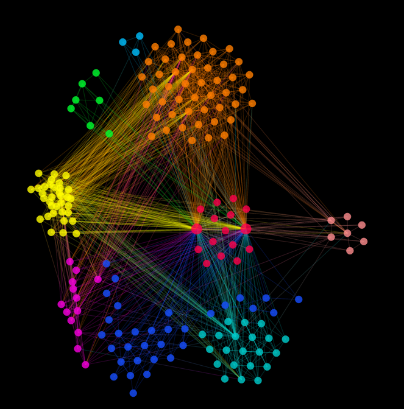

Nodes
caption
[string|function] default: "caption"
The configuration for the text that will appear as the caption on a node and will appear during filtering and searching. A string should provide a key within the GraphJSON. By default alchemy will look for a "caption" key on each node in the graphJSON, however any key present on some or all of the nodes can be provided. The user can also provide a function, for instance that will take the node from the graphJSON as a parameter:
caption: function(node) {
return "" + node.firstName + " " + node.lastName;
}
Where the GraphJSON node objects contain "firstName" and "lastName".
"nodes": [
{
...
"firstName": "Kate",
"lastName": "Smith"
},
...]
fixNodes
[bool] default: false
All nodes are draggable by default. Setting to true means that nodes will not be draggable after their initial layout.
fixRootNodes
[bool] default: false
Root nodes are draggable by default. Setting to true means that root nodes cannot be dragged after their initial layout.
nodeColour
[string (any css color)] default: null
This is a convenience parameter to quickly assign a default color to all nodes. This method will overwrite any styles assigned by the css. For more on how to assign colors to specific nodes read about nodeTypes and our guide to graph styling.
nodeMouseOver
[string|function] default: "caption"
Similiar to the alchemy.conf.caption parameter, alchemy.conf.nodeMouseOver can receive a string or a function. If it receives a string as in the default, it will look for that string on every node in the graphJSON and display the text when that node is moused over. If a function is passed, that function will be called with the node as an optional parameter.
For instance:
{
nodeMouseOver: function(node) {
return node.someData + node.someOtherData
}
nodeOverlap
[integer] default: 24
Used in the collision detection function, should be a number slightly more than double the size of the nodeRadius and will cause the center of all nodes to be no closer than the specified distance. Note: Keep in mind that the stroke-width of the svg element is in addition to the radius of the circle svg element and therefore nodes will overlap with a value of only 2 x the nodeRadius
nodeRadius:
[integer|string|function] 10 If the default or a user specified intege, the value will be the pixel size of a node that indicates node size. If the user specifies a string, that string will be the key, used to look up the nodeRadius on individual nodes in the GraphJSON. Additionally, the user can specify a function that will return node size. For example, GraphJSON where nodes have the following values:
{"nodes":[
{"id": 1,
"betweeness": 20}
{"id": 2,
"betweeness": 30},
...],
...}
If the user specifies alchemy.conf.nodeRadius: "betweeness" the nodes will be sized at 20 and 30 respectively. Whereas if the user specifies:
alchemy.conf.nodeRadius: function(n) {
return n.betweeness * 2/3
};
The nodes would be sized at 13.3 and 20 respectively.
rootNodeRadius:
[integer] 15 The default size of root node(s).
nodeTypes:
[array of strings|object] null
Parameters passed correspond to keys and values in the GraphJSON that alchemy will use to, for instance, create filters. For Example, if working with the following GraphJSON:
{"nodes": [
{
"name": "Making Sandwiches",
"mid": "/m/09v95qs",
"label": "Making Sandwiches",
"node_type": "movie",
"genre": [
"Short Film"
],
"type": "movie",
"id": 670298
},
{
"name": "Academy Award for Actress in a Leading Role",
"mid": "/m/0gqwc",
"label": "Academy Award for Actress in a Leading Role",
"node_type": "award",
"genre": [],
"type": "award",
"id": 593781
},
{
"name": "Religion, Inc.",
"mid": "/m/0g5q35v",
"label": "Religion, Inc.",
"node_type": "movie",
"genre": [
"Parody",
"Comedy"
],
"type": "movie",
"id": 778069
},...],
...}
The user would pass the following object to alchemy.conf.nodeTypes for the "award" and "movie" nodes: {type: ["award", "movie"]}
Edges
edgeColour:
[css color value] null
A colour to be passed to all edges. If alchemy.conf.cluster is true then colors assigned by edge gradients take priority. Read more about the [[cluster configuration|Layout#cluster]].
edgeTypes:
[array of strings|object] null
Parameters passed correspond to keys and values in the GraphJSON that alchemy will use to create filters. For Example, if working with the following GraphJSON:
"edges": [
{
"source": 95421,
"target": 714293,
"label": "acted in"
},
{
"source": 95421,
"taget": 95426,
"label": "parent of"
},
{
"source": 95421,
"role": "Devlin Moran",
"target": 603720,
"label": "acted in"
},...]
...}
The user would pass : {"label": ["acted in", "parent of"]}.
Alternatively, If the key is edge_type, you can also pass just the array of strings like ["acted in", "parent of"]
Editing
showEditor:
[bool] false
When both showEditor and showControlDash are true, creates an Editor menu where you can directly edit elements on the graph. If showControlDash is false, nothing will happen.
removeElement:
[bool] false
Adds a "Remove Element" button to the editor dropdown in the control dash. When clicked, it will remove any selected node or edge. Keep in mind this is to completely remove the element, not hide it.
Filtering
showFilters:
[bool] false
When both showFilters and showControlDash are true, creates a Filter menu where you can apply different fitlers to the graph. If showControlDash is false, nothing will happen.
edgeFilters:
[bool] false
If set to true, alchemy will load a set of filters that correspond to edge types defined in the alchemy.conf.edgeTypes parameter, and load an easy to use dropdown into the Filters section of the control dash.
nodeFilters:
[bool] false
If set to true, alchemy will load a set of filters that correspond to node types as defined in the alchemy.conf.nodeTypes parameter and load an easy to use dropdown into the Filters section of the control dash.
captionToggle:
[bool] false
Allow toggling of caption visibility. When toggled, .hidden is assigned to all captions. The default hidden class can easily be overwritten to allow different colors or opacities for node captions when hidden.
edgesToggle:
[bool] false
Allow toggling of edge visibility. When toggled, .hidden is assigned to all edges. The default hidden class can easily be overwritten to include different levels of opacity or color upon toggle.
nodesToggle:
[bool] false
Allow toggling of node visibility. When toggled, .hidden is assigned to all nodes. The default hidden class can easily be overwritten to include different levels of opacity or color upon toggle.
toggleRootNodes:
[bool] true
If true, root nodes are affected by nodesToggle.
Layout
graphHeight
[function] default: See source.
Defaults to a function that selects the height of the enclosing div. If there is no enclosing div, the function returns the screen height on load. The user can define there own custom function for graphHeight or a function that returns an integer to be converted to pixels. e.g. function() {return 500}
graphWidth
[function] default: See source.
Defaults to a function that selects the height of the enclosing div. If there is no enclosing div, the function returns the screen width on load. The user can define there own custom function for graphWidth or a function that returns an integer to be converted to pixels. e.g. function() {return 500}
alpha
[float] default: .5
Is a part of the d3 force layout, alpha sets the cooling parameter for the force layout. You can read more about how changing the default value for alpha can change the force layout in the d3 docs.
cluster
[bool] default: false
Clustering nodes will have a major effect on layout and color and is one of Alchemy's most powerful off the shelf features.. To cluster nodes, simply set cluster to true. Alchemy.js will expect a 'cluster' key for each node in the provided GraphJSON whose value is an integer. For example:
{
"edges":[...
],
"nodes": [
{
"cluster": 4,
"degree": 8,
"id": "P7jQJNVTAG",
"firstName": "Kate",
},
{
"cluster": 0,
"degree": 19,
"id": "fPKtFfXDds",
"firstName": "Katherine",
},
{
"cluster": 0,
"degree": 4,
"id": "QgVAXaBQg2",
"firstName": "Duane",
},...
]
}
The value for cluster will be used to look up a color from alchemy.conf.clusterColours. All nodes of the same cluster will receive the same colour. Edges between nodes of the same cluster will receive that cluster's colour, while edges that span between two nodes in different clusters will receive an inverse gradient of the colours of the two colours. For example:

This makes it easy to visually identify 'boundary spanners' in social networks, unexpected links in a host of network analysis and link analysis use cases, and even to visually illustrate results of gene co-expression networks.
clusterColours
[array of css colors] default:
d3.shuffle(["#DD79FF", "#FFFC00", "#00FF30", "#5168FF", "#00C0FF",
"#FF004B", "#00CDCD", "#f83f00", "#f800df", "#ff8d8f",
"#ffcd00", "#184fff", "#ff7e00"])
Provides a list of colors that can be assigned to different clusters. The above colors are the defaults that are randomly assigned to the clusters using the d3.shuffle method. Colours can be predictably assigned to colours by simply providing the colours in the position of the corresponding cluster. For instance, in an array of the following colours [red, green, yellow, orange], cluster 0 would be red, cluster 1 would be green, cluster 2 would be yellow, cluster orange would be 3, etc.
forceLocked
[bool] default: true
By default that force layout does not continue after initial layout is performed. Setting forceLocked to false will allow the force layout to run on node drag, click, and other interactions.
linkDistance
[function] default: See source.
Alchemy.js provides the ability for a user defined custom link distance function in the force layout. If you wish to override the default value with a function or provide another static value, simply pass it as the value for linkDistance in the config. Your custom function will have the edge as well as our layout constant k available. For example, yourLinkDistanceFn: function(edge, k) { return edge.something * k}
Read more about how linkDistance is used in d3's force layout here.
Other
dataSource
[string, object], null
Does not receive a default value and is the single parameter that must be defined by the user in order to use Alchemy.js. dataSource receives either a string specifying the location of a GraphJSON object, or a GraphJSON formatted object directly. If the user specifies a string, Alchemy.js will use d3's d3.json method with the string as the data source and the graph viz app as the callback. If an object is specified, the graph viz will use the object directly as a data source.
initialScale
[integer] default: 1
Specifies the initial distance of the zoom on the svg. A value assiged here initiates "scale" value directly in the svg's "transform" attribute.
initialTranslate
[2 integer array] [0,0]
Specifies the initial "pan" of the svg, corresponding directly to the "translate" value in the svg's "transform" attribute. Because graphs layout differently every time, and because there is currently not support for setting initial node positions, there is limited utility to setting different values for the "translate" of the svg.
warningMessage
[string] "There be no data! What's going on?"
Specifies a custom warning message if there is no data.
afterLoad
[str, function] default: 'afterLoad'
If afterLoad receives a string, that string is passed to alchemy as a top level key that returns true when the graph has loaded. This maybe helpful for certain applications where the graph context is being watch and events can be fired when alchemy.afterLoad or alchemy.someOtherString is true.
If afterLoad receives a function, that function is simply run after the graph is drawn. E.g. alchemy.someFunction()